QGIS Workshop GLT19
Ein Workshop für Anfänger
von / mit Andreas Voit
Über mich
- Studium Geoinformationstechnik
- Langjährige GLT Erfahrung
- OSM User
- Seit 1/2 Jahren Mitautor der OSM Wochennotiz
- Beruflich Anwender, Tester von propritären GIS Lösungen
Was ist QGIS?
- Open Source GIS
- GIS = Geografisches Informationssystem
- Geografisches Informationssystem = Anzeige / Verwaltung / Analyse von geografischen Daten
Geografische Daten
- Vektordaten
- Vektordaten in entsprechenden Vektormodellen beschreiben raumbezogene Objekte anhand von Punkten. Quelle: Wikipedia, 20.4.2019
- Punkte
- Linien
- Polygone
Geografische Daten
- Rasterdaten
- Rasterdaten sind neben Vektordaten raumbezogene computerlesbare Daten (Geodaten) mit bildhaftem Informationsgehalt. Quelle: Wikipedia, 20.4.2019
- Bilder wie jpeg, png, tif, ...
- Beispiel
andere Daten
Daten ohne Raumbezug können mit räumlichen Daten verknüpft werden
Bsp.: Liniennetz wird mit Liste von Straßennamen verknüpft = Straßennetz
OGD Daten
Open Goverment Data = Daten aus der Verwaltung werden öffentlich den Bürgern und Interessierte zur Verfügung gestellt.
Nicht nur räumliche Daten
Link: https://www.data.gv.at/
räumliches Referenzprojekt: basemap.at
QGIS
- Freies und Open Source GIS
- seit Juli 2002 Quelle: Wikipedia, 20.4.2019
- Durch ständige Entwicklung echt gute Alternative zu propritären Lösungen
- Einsatz in mehreren deutschen und schweizer Verwaltungen
- In Österreich ist Vorarlberg ein großer Unterstützer des Projektes
Einführung in die GUI
Beispiele - Intermodales Verkehrsreferenzsystem Österreich (GIP.at)
https://www.data.gv.at/katalog/dataset/3fefc838-791d-4dde-975b-a4131a54e7c5
Projektion WGS84

Projektion MGI - Austria Lambert
Hintergrundkarte Basemap.at
Straßenkarte (bunt, grau, overlay)
Orthofoto
Geländemodell
Oberflächenmodell
Daten in QGIS laden
Arbeitsschritte
Zu Graz zoomen
Ausschnitt Graz in GeoPackage exportieren
Ausschnitt Graz in QGIS nach Straßenkategorie symbolisieren
Erstellung Karte aus Ausschnitt
Karte Ergebnis
Beispiele - Öffi-Netz STMK
Arbeitsschritte
Daten als Shapedatei herunterladen (optional)
Daten in neuer GeoPackage-Datei ablegen (optional)
Daten aus Geopackage/Datei in QGIS laden
Symbolisierung der einzelnen Layer
Erstellung Web Karte mit QGIS2Web-Plugin
QGIS2Web Plugin aufrufen
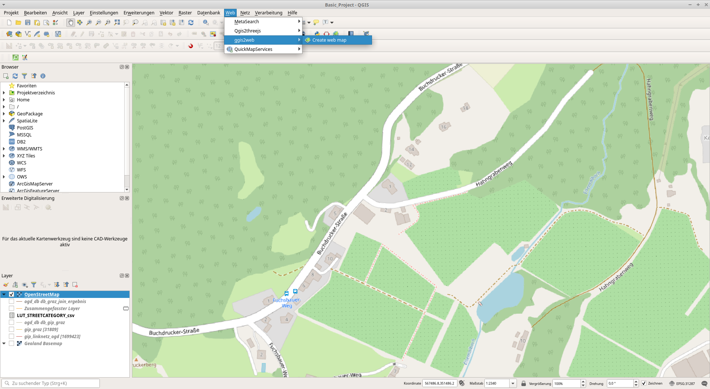QGIS2Web Help
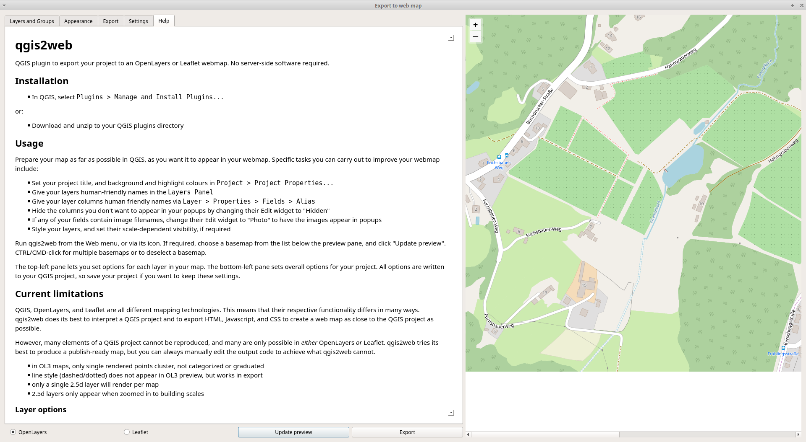Beispiele - OSM Karte digitalisieren
Laden von OSM Daten in QGIS
Einführung in das Bearbeitungstool
Speichern der Bearbeitung in Spatial Lite Datenbank
Beispiele - 3D Karte für Anzeige in WebBrowser
Hintergrundkarte basemap.at - DGM
Standorte von Flughäfen aus OSM mit Plugin QuickOSM
Erstellung Karte mit Plugin Qgis2threejs
Flughäfen aus OSM
Abfrage mit Hilfe von Overpass Turbo
Erstellung Karte mit Plugin Qgis2threejs
QuickOSM
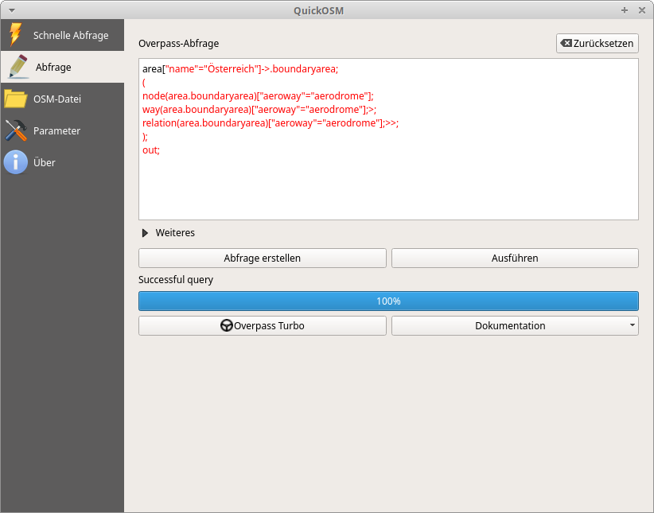Flughäfen als Polygone
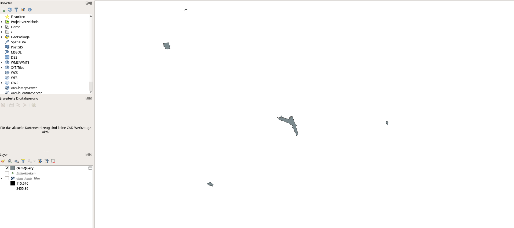Zentroid von Polygon berechnen lassen
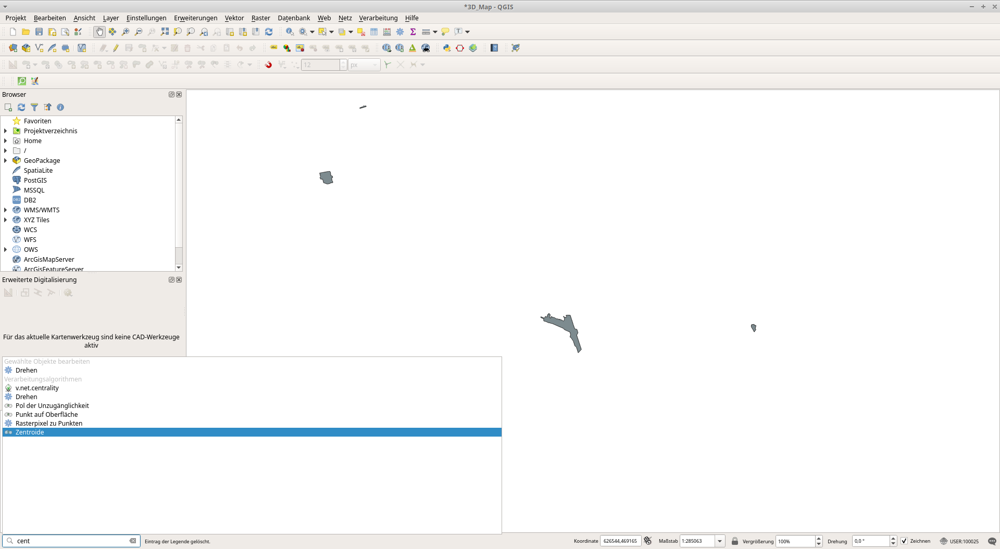Berechnung ...
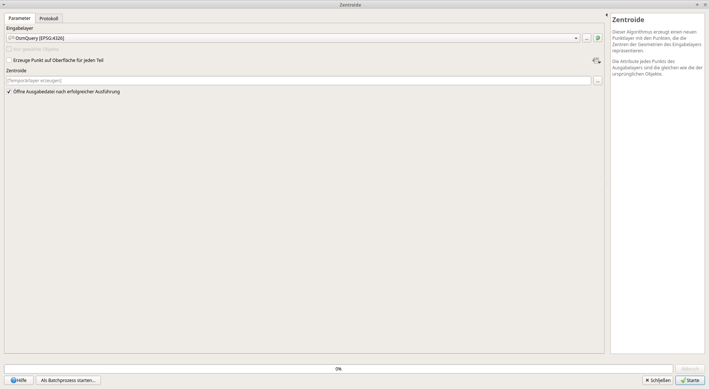Anzeige von Zentroid in Karte
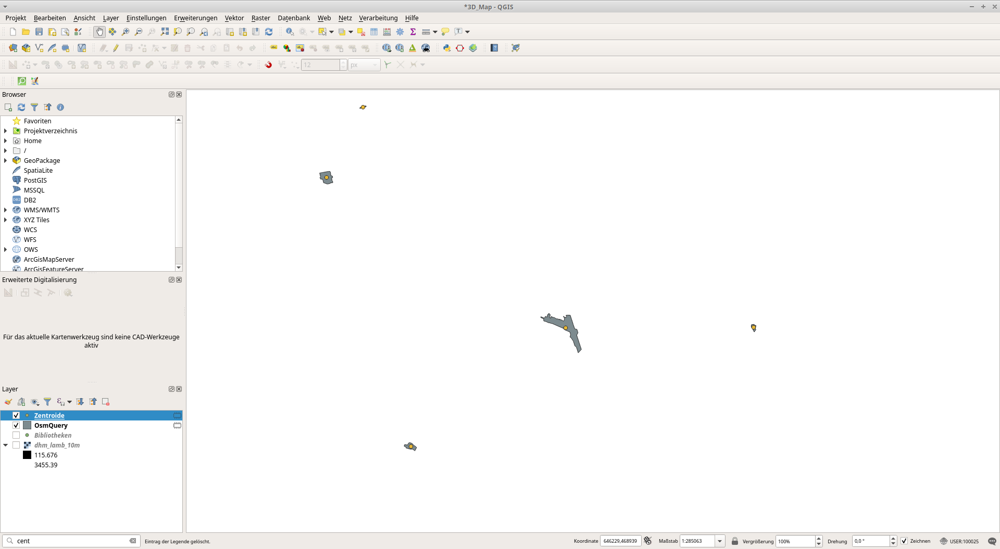Anzeige DGM und Flughäfen auf QGIS Karte
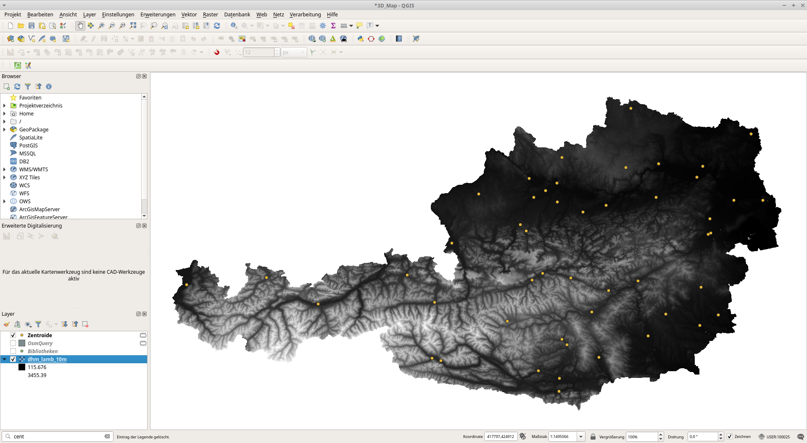Öffnen von Qgis2threejs-Tool

Konfiguration der Ansicht
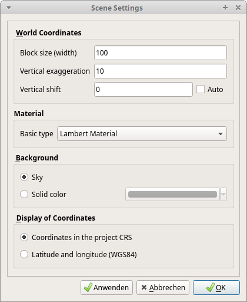Konfiguration der Darstellung der Flughäfen
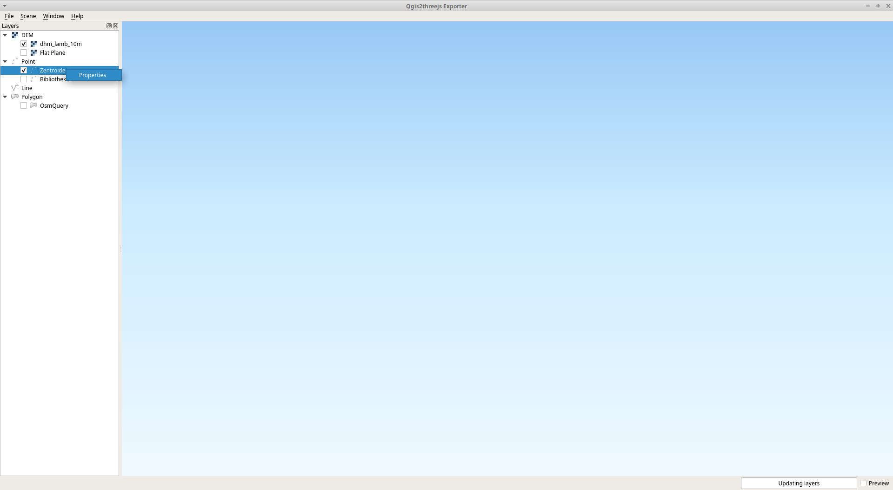Ergebnis in WebBrowser
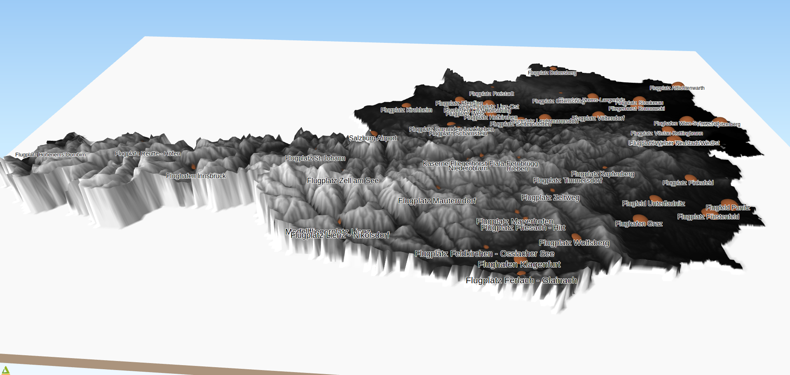Beispiele - Karte von mobiler Feinstaubmessung
Hintergrundkarte basemap.at
Messdaten kommen aus CSV-Datei
Erstellung Karte in QGIS